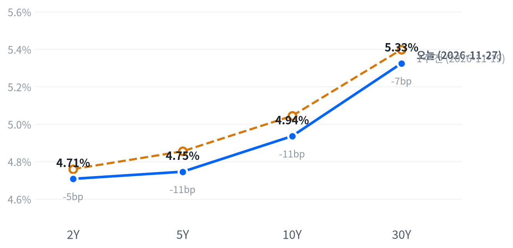

추수감사절 다음 날 13:00(ET)에 끝난 반일 거래에서 메모리·저장장치·광통신주가 7~14% 뛰어 기술 업종이 2.80% 올랐고, S&P 500은 1.60% 오른 7,297.49로 하루 고점에서 끝났다. 엔비디아는 장 초반 4% 넘게 밀린 끝에 0.80% 오르는 데 그쳤다.
주식이 오르자 장기물 금리가 함께 올라, 11월 25일 장기물 하락을 보험성 국채 매수로 본 판단이 예상한 쪽으로 처음 움직였다. 13:00(ET)에 끝난 반일 거래이고 기대인플레도 함께 올라 기술 업종의 되감기 판단과 함께 하루로 결론 내기는 이르고, 결론은 12월 3일(10년물)과 4일(기술 업종) 값에서 낸다.
11월 27일 미국 증시는 추수감사절 휴장 다음 날 13:00(ET)에 문을 닫은 반일 거래에서 지난주 AI주 폭락 뒤의 되돌림을 이어 갔다. 반등을 이끈 것은 메모리·저장장치·광통신이었다. 마이크론·시게이트·웨스턴디지털이 7%대, 코히런트가 14.07% 올랐고, 엔비디아는 개장 직후 시가 대비 4.31% 밀렸다가 0.80% 오르는 데 그쳤다. 채권시장에서는 주식이 오르는 동안 장기물 금리가 올라, 10년물이 14:00(ET) 조기 마감 직전 기준으로 7.4bp 오른 4.936%에 닿았다.
이 하루는 열려 있는 두 판단을 모두 움직였지만 어느 쪽도 결론 내지 못한다. 황 복귀일 반등을 쏠린 매도 포지션의 되감기로 보고 이후 기술 업종이 시장보다 약할 것이라고 본 판단(11월 23일)은 뒷받침 기준에서 멀어졌다. 11월 23일 종가 대비 XLK와 S&P 500의 누적 등락률 차이는 -2.207%p로, 직전 거래일(-3.307%p)보다 뒷받침 기준(-3.44%p)에서 더 멀어졌다. 반대 설명은 황 복귀로 불확실성이 걷히면서 업종이 다시 평가받는다는 것이고, 메모리 공급난 보도가 그 근거가 될 수 있다. 연합뉴스에 따르면 월스트리트저널은 AI 인프라 투자 붐으로 메모리 반도체 공급난이 심해져 글로벌 전자 업계가 메모리 칩 확보 경쟁에 나섰다고 보도했고, 씨티그룹 애널리스트는 최장 5년의 구속력 있는 장기 계약과 구매대금 25~30% 선지급 사례가 있다고 설명했다. 이날 메모리·저장장치가 가장 강했던 것은 이 설명과 어긋나지 않지만, 지난주 함께 크게 내렸던 종목이 되오른 것이라 되감기 설명과도 맞는다. 업종 포지션이나 옵션 자료가 없어 시장이 어느 쪽을 가격에 넣었는지는 모른다. 엔비디아가 뒤처진 원인도 확인되지 않았다. 시장 일각에서는 상하이의 한 데이터센터에서 수출 통제 대상인 엔비디아 블랙웰 하드웨어가 발견됐다는 블룸버그 보도를 전하며, 이번 사안이 미국의 반도체 수출 통제가 실제로 어떻게 집행되고 있는지 의문을 키운다는 의견이 있었다. 장기물에서는 11월 25일의 장기물 하락을 AI 하드웨어 매도와 유가 급등 속 보험성 국채 매수로 본 판단(11월 25일)이 처음 예상한 쪽으로 움직였다. 주식이 진정되자 장기물이 오른 것이다. 같은 날 10년 기대인플레가 3bp 올라 상승분의 일부는 인플레 보상일 수 있고, 금도 올라 위험 회피 수요가 모두 빠졌다고 보기는 어렵다.
이 하루로 새 아이디어를 내지 않는다. 반도체·AI 하드웨어 업종의 SPY 대비 3개월 상대수익률은 이날 반등에도 -15.34%p로 5거래일 전보다 1.47%p 더 악화됐고, 순위도 25개 가운데 24위 그대로다. 13:00(ET)에 끝난 반일 거래의 하루 반등으로 업종 교체를 판단하기는 이르다. 자금 조달 비용의 재평가라는 셋째 설명도 남아 있다. 키움증권 조호준 연구원은 젠슨 황 복귀로 리더십 공백은 해소됐지만 남은 쟁점은 AI 수요와 조달 비용이라고 진단하고, CRWV 회사채 수익률과 CDS 스프레드가 10월 초 수준 아래로 내려오는지를 멀티플 회복의 기준으로 제시했다. 원화 현금·단기채 쪽에서는 미국 2년물 금리가 지표 발표 없이 5.8bp 올랐다. 12월 인상 확률이 약 98%로 보도된 11월 25일 이후 단기물이 다시 움직인 것이지만, 같은 날 확률 자료가 없어 정책 경로 변화로 볼 근거는 없다. 장기물 방향을 10년물 선물이나 장기채 ETF로 표현하는 비용(롤·캐리·스프레드)은 자료가 없어 따지지 못한다. 판단의 시계는 12월 3일(10년물)과 12월 4일(기술 업종)이고, 그 끝에 12월 3일 황 CEO의 상원 은행위원회 증언과 12월 4일 08:30(ET) 11월 고용보고서가 몰려 있다.
보험성 매수 판단은 16:00 ET 기준 10년물 금리의 11월 25일 4.862% 대비 12월 3일 변화로 확인한다. +13.3bp 이상이면 판단을 뒷받침하고, -13.3bp 이하이면 판단이 약해져 인상 경로가 장기 기대를 낮췄다는 평탄화 설명을 우선 설명으로 본다. 그 사이이면 판단을 보류한다. 방향이 판단대로 나와도 같은 기간 S&P 500 누적 등락률이 0% 미만이면 원인은 판단하지 않는다. 상승분 가운데 기대인플레 몫이 크게 나오면 보험 수요가 빠졌다는 설명의 설명력이 낮아지므로, 11월 27일 실질금리가 갱신되면 그 몫을 함께 본다. 기술 업종의 포지션 되감기 판단은 11월 23일 종가 대비 12월 4일 종가의 XLK 누적 등락률에서 S&P 500 누적 등락률을 뺀 값이 -3.44%p 이하이면 뒷받침되고, +3.44%p 이상이면 약해져 불확실성 제거에 따른 재평가를 우선 설명으로 본다. 같은 기간 16:00 ET 기준 10년물이 20bp 이상 오르면 원인은 판단하지 않는다.
| 지수 | 종가 | 등락 | 기준일 |
|---|---|---|---|
| 닛케이225 | 58,711.11 | +2.11% | 11월 27일 |
| 항셍 | 22,694.77 | +2.11% | 11월 27일 |
| 상해종합 | 3,606.49 | +3.73% | 11월 27일 |
| DAX | 25,441.24 | +0.90% | 11월 27일 |
| FTSE100 | 10,698.81 | +0.84% | 11월 27일 |
| 유로스톡스50 | 6,089.20 | +1.24% | 11월 27일 |
| VIX | 23.81 | -2.99p | 11월 27일 |
여섯 지수와 VIX는 모두 11월 27일 값이다. 미국은 11월 26일 추수감사절로 휴장해 VIX 등락은 11월 25일 대비이고, 포인트다.
아시아와 유럽이 모두 올랐고 미국이 그 흐름을 이었다. 상해종합이 3.73%, 닛케이225와 항셍이 각각 2.11% 올라 아시아가 가장 강했고, 유럽은 유로스톡스50이 1.24%, DAX가 0.90% 오르는 데 그쳤다.
밤사이 S&P 500 선물(ES)은 7,183에서 7,254 사이, 나스닥100 선물(NQ)은 25,983에서 26,436 사이에서 움직였고, 두 계약 모두 23:30(ET)에 고점을 찍었다. 현물은 S&P 500이 1.11%, 나스닥이 1.46%, 러셀 2000이 0.64% 높게 출발했다. 미국 휴장 동안 아시아·유럽이 올랐고 미국도 높게 출발했으며, 개장 전 미국 경제지표 발표는 없었다.
S&P 500 구성 종목에 같은 비중을 적용하면 지수 상승폭이 더 작았다. 동일가중 지수의 수익률이 시가총액가중 지수보다 0.4%p 낮았다는 뜻이다. 이는 시가총액 비중이 큰 종목들의 강세가 지수 상승에 상대적으로 크게 작용했을 가능성을 시사한다. 세 지수는 모두 고점권에서 끝났다.
저점권·고점권 경계는 S&P 500·나스닥·러셀 2000 지수 3개의 일별 관측값 2,259개로 다시 잰 기준이다. 종가가 그날 고가와 저가 사이 어디에서 끝났는지를 날마다 재어 모으고, 그 관측값을 낮은 순으로 세웠을 때 아래에서 4분의 1 지점과 위에서 4분의 1 지점을 경계로 삼는다. 종가 위치가 위쪽 경계 이상이면 고점권, 아래쪽 경계 이하면 저점권 마감이다.
AI 하드웨어 반등이 지수를 끌어올린 날이고, 다른 자산은 위험선호 회복을 한 방향으로 따라가지 않았다. VIX는 2.99p 내린 23.81이지만 최근 2년(504거래일) 가운데 높은 쪽 13% 안에 남았다. 국채 금리는 주식과 함께 올랐고, 금은 금리와 달러가 함께 오르는 가운데서도 올랐다. 이날 미국 경제지표 발표는 없었다.
| 지수 | 종가 | 등락률 |
|---|---|---|
| 나스닥 | 24,129.50 | +2.31% |
| S&P500 성장주 | 125.72 | +1.98% |
| 러셀2000 | 2,750.30 | +1.71% |
| S&P500 | 7,297.49 | +1.60% |
| S&P500 가치주 | 238.63 | +1.30% |
| 다우존스 | 50,774.94 | +1.18% |
| 섹터 | 등락률 |
|---|---|
| 기술 | +2.80% |
| 경기소비재 | +2.11% |
| 커뮤니케이션서비스 | +1.99% |
| 소재 | +1.84% |
| 산업재 | +1.60% |
| 에너지 | +1.26% |
| 금융 | +1.15% |
| 부동산 | +0.64% |
| 필수소비재 | +0.41% |
| 헬스케어 | +0.28% |
| 유틸리티 | +0.28% |
반일장 반등은 하루 고점에서 끝났지만 기술 대형주 쪽에 기울었다. S&P 500은 1.60% 오른 7,297.49, 나스닥은 2.31% 오른 24,129.50, 다우는 1.18% 오른 50,774.94, 러셀 2000은 1.71% 오른 2,750.30으로 끝났다. 네 지수의 하루 움직임은 평소 수준이었고, 성장주(1.98%)가 가치주(1.30%)보다 많이 올랐다. 지난주 폭락 뒤 이번 주 S&P 500이 5.6% 올라 2025년 4월 이후 가장 큰 주간 상승을 기록했다는 보도가 나왔다.
장중에는 개장 갭 뒤 첫 30분에 한 번 되밀렸다. S&P 500은 시가 7,263에서 10시 무렵 7,211까지 밀렸지만 11월 25일 종가(7,183)를 지켜 하락으로 돌아서지 않았고, 이후 꾸준히 올라 세 지수 모두 하루 고점에서 끝났다. 엔비디아는 같은 첫 30분에 시가 151.94달러에서 145.39달러까지 4.31% 밀린 뒤 150.49달러로 끝났다. 반도체 업종이 함께 오르는 날 엔비디아만 장 초반 매도가 컸고, 이를 직접 설명하는 재료는 확인되지 않았다.
지수 상승의 절반 이상은 기술 한 업종이 만들었다. 추정 기여도로 기술이 +0.95%p를 보태 지수 상승 1.60% 가운데 가장 컸고, 경기소비재 +0.28%p, 커뮤니케이션서비스 +0.26%p, 금융 +0.12%p, 산업재 +0.10%p가 뒤를 이었다. 설명되지 않는 부분은 -0.20%p다.
추정 기여도는 업종 비중을 직접 받지 않아, 최근 252거래일 지수·업종 수익률로 추정한 비중을 곱한 값이다. 소재와 부동산은 비중을 추정할 수 없어 빠졌다.
11개 업종이 모두 올랐지만 오름폭의 순서는 위험선호 쪽이었다. 기술·경기소비재·커뮤니케이션서비스가 앞서고 유틸리티·헬스케어(각 0.28%)와 필수소비재(0.41%)가 가장 덜 올랐다. 같은 비중으로 잰 지수가 덜 오른 날이고 13:00(ET)에 끝난 반일 거래였던 만큼, 이 하루를 지난주 하락의 추세 전환으로 보기는 이르다. 기술 업종은 한 주 전보다 7.48% 높지만 한 달 전보다는 16.15% 낮다.
출처: Fox Business
| 만기 | 종가 | 전일比(bp) | 1주 전 | 주간 변화(bp) |
|---|---|---|---|---|
| 2Y | 4.708% | +5.8 | 4.760% | -5.2 |
| 5Y | 4.746% | +6.6 | 4.855% | -10.9 |
| 10Y | 4.936% | +7.4 | 5.044% | -10.8 |
| 30Y | 5.325% | +7.4 | 5.399% | -7.4 |
국채 금리는 뉴욕 14:00 ET 무렵 값이다(전 거래일 16:00, 1주 전 16:00 ET 무렵 — 채권시장 조기 폐장일은 그 마감 시각). 장 마감 종가와 다를 수 있다. 1주 전 값은 트레이드웹(CNBC) 기준이다.
주식이 반등한 날 장기물 금리가 더 올라 커브가 가팔라졌다. 10년물은 7.4bp 오른 4.936%, 30년물은 7.4bp 오른 5.325%, 2년물은 5.8bp 오른 4.708%로, 채권시장 조기 마감 직전 값이다. 10년물은 최근 2년(504거래일) 가운데 이보다 높았던 날이 45일뿐이고, 30년물은 37일뿐이다.

커브 차트의 「오늘」은 11월 27일 14:00 ET 무렵, 「1주 전」은 11월 19일 16:00 ET 무렵 값이다. 1주 전보다 2년물은 5.2bp, 10년물은 10.8bp, 30년물은 7.4bp 낮다.
하루로는 30년물이 2년물보다 1.6bp 더 오른 베어 스티프닝이다. 2s10s는 22.8bp(전 거래일 21.2bp)로 넓어졌고 5s30s는 57.9bp다. 1주 전과 비교하면 5년물(-10.9bp)과 10년물(-10.8bp)이 가장 많이 내리고 2년물(-5.2bp)이 가장 덜 내려, 2s10s 기준으로는 한 주 전 28.4bp에서 5.6bp 좁혀진 불 플래트닝이다. 이날의 가팔라짐은 그 한 주 장기물 하락분의 일부를 되돌린 것이다.
30년물은 평소보다 크게 움직였지만, 원인을 짚은 보도는 확인되지 않았다. 주식이 오르고 VIX가 내린 날 장기물이 단기물보다 더 올라, 위험 회피용으로 샀던 장기 국채를 되판 흐름과 맞는 모습이다. 같은 날 10년 기대인플레가 2.15%로 3bp 올라, 상승분의 일부는 인플레 보상일 수 있다. 여기서 기대인플레는 명목에서 실질을 뺀 값이라 위험·유동성 프리미엄도 섞여 있다. 11월 27일 실질금리는 아직 나오지 않아 두 몫을 나눌 수 없고, 이날 값이 14:00 ET 조기 마감 직전 값이라 전 거래일 16:00 ET 값과 시각도 다르다.
30년물의 하루 움직임은 최근 60거래일 평균 하루 변동 대비 1.59배, 10년물은 1.3배다.
명목금리를 실질금리와 기대인플레로 나눈 최신 자료는 11월 25일 것이다. 그날 10년물 하락 6bp는 전부 실질금리에서 나왔고 기대인플레는 그대로였다. 5거래일로는 22bp 하락 가운데 15bp가 실질금리, 7bp가 기대인플레였다. 11월 25일 하락이 실질금리 쪽이었던 만큼, 이날 반등도 실질금리가 되돌린 것이라면 보험성 매수 설명을 뒷받침하는 단서가 된다.
하이일드 스프레드는 휴장일인 11월 26일 3.77%로 5거래일 동안 25bp 넓어졌고, 투자등급은 0.99%다. 이날의 주식 반등은 아직 반영되지 않았다. 10년 기간프리미엄은 11월 20일 0.89%가 최신 값이다.
주식과 금리의 관계도 바뀌어 있다. 최근 60거래일 두 자산은 느슨하게 같은 방향으로 움직여, 반대로 움직이던 직전 60거래일과 부호가 바뀌었다. 이날도 주식과 금리가 함께 올랐다. 이 관계가 이어지면 장기물 금리 상승은 주식 반등과 함께 나오는 날이 많아지고, 금리 하락이 주식 불안을 따라 나오는 날도 늘어난다.
주식과 금리의 상관계수는 최근 60거래일 0.227, 직전 60거래일 -0.30이다.
5년 뒤 5년 명목금리는 5.05%, 실질 2.94%다(11월 25일 기준). 기대인플레 쪽 수치와의 교차 확인은 이날 할 수 없었고, 위험 프리미엄이 섞인 값이다.
| 항목 | 수요일 잔고 | 잔고 주간 변화 | 주간 평균 전주 대비 | 전년 대비 |
|---|---|---|---|---|
| 지급준비금 | 2조 9,287억 달러 | -731억 달러 | -160억 달러 | +671억 달러 |
| TGA(재무부 계정) | 9,236억 달러 | +313억 달러 | -146억 달러 | -14억 달러 |
| 시장 역레포(ON RRP) | 3.0억 달러 | -0.3억 달러 | +0.7억 달러 | -24억 달러 |
| 해외 역레포 | 3,268억 달러 | +101억 달러 | -45억 달러 | -58억 달러 |
| 보유 국채 | 4조 5,930억 달러 | +59억 달러 | +28억 달러 | +3,986억 달러 |
| 보유 MBS | 1조 8,696억 달러 | -139억 달러 | -39억 달러 | -1,833억 달러 |
| 통화쌍 | 종가 | 등락률 | 기준일 |
|---|---|---|---|
| DXY | 104.014 | +0.30% | 11월 27일 |
| USD/KRW | 1,333.57 | -0.73% | 11월 27일 |
| USD/JPY | 159.56 | +0.21% | 11월 27일 |
| EUR/USD | 1.0937 | -0.38% | 11월 27일 |
달러는 미국 금리와 함께 올랐지만 원화는 반대로 강해졌다. 달러지수는 0.30% 오른 104.014로 최근 2년(504거래일) 가운데 높은 쪽 16% 안에 있다. 원/달러는 0.73% 내린 1,333.57로, 같은 기간 가운데 이보다 낮았던 날이 12일뿐인 수준까지 내려왔다.
달러 강세는 미국 금리가 만기 전반에서 오른 날 나왔다. 유로가 0.38% 내린 1.0937, 달러-엔이 0.21% 오른 159.56이라 금리차가 달러를 받쳤다는 설명과 어긋나지 않지만, 상대국 금리를 같은 시각으로 재지 않아 그 경로를 확인하지는 못한다. 유럽 금리의 약세 압력이 억제되고 있지만 프랑스 등급 하향 위험이 남았다는 분석이 나왔고, 이것을 유로 약세와 잇는 자료는 없다. 원화 강세는 달러 전반과 반대 방향이라 원화 고유의 재료가 있었을 수 있다. 같은 날 한국 증시에서 SK하이닉스가 7.45%, 삼성전자가 4.55% 올랐지만, 외국인 자금이 환율을 움직였는지는 이 자료로 확인할 수 없다.
원자재·환율은 뉴욕 16:00 ET 가격이고, 그 전에 닫은 시장은 마감 가격이다(오늘 WTI 13:00·Brent 13:00·Natural Gas 13:00·Gold 13:00·DXY 13:00 ET). 결제가와 다를 수 있다.
출처: ING THINK
| 품목 | 종가 | 등락률 |
|---|---|---|
| WTI | $82.82 | -1.56% |
| Brent | $90.10 | -0.69% |
| 천연가스 | $3.509 | -4.49% |
| 금 | $3,674.60 | +2.00% |
금은 금리와 달러가 함께 오른 날에도 올랐고, 유가는 내렸다. 금은 2.00% 오른 3,674.60달러, WTI는 1.56% 내린 82.82달러, 브렌트는 0.69% 내린 90.10달러다.
금은 10시 30분(ET) 무렵 3,643달러 저점에서 반등해 하루 고점 부근에서 끝났다. 금리와 달러가 함께 오른 날의 상승이라 보유비용으로는 설명되지 않고, 10년 실질금리 최신 값은 11월 25일 것이라 이날과 견줄 수 없다. 원인을 짚은 보도는 확인되지 않았다. 주식이 반등한 날에도 금이 오른 것은 위험 회피 수요가 모두 빠지지 않았다는 단서로 남는다.
WTI는 개장 무렵의 84달러대가 고점이었고, 12:30(ET) 무렵 저점까지 밀린 뒤 13:00(ET) 마감 시점에도 저점 부근에 머물렀다. 브렌트는 WTI보다 7.28달러 높아, 그 차이가 전 거래일(6.60달러)보다 벌어졌다. 미국이 14개 경제권에 새 관세를 제안했다는 보도가 나왔지만, 유가 하락과 잇는 자료는 없다. 천연가스는 4.49% 내렸다.
원자재·환율은 뉴욕 16:00 ET 가격이고, 그 전에 닫은 시장은 마감 가격이다(오늘 WTI 13:00·Brent 13:00·Natural Gas 13:00·Gold 13:00·DXY 13:00 ET). 결제가와 다를 수 있다.
출처: PBS
반도체·AI 하드웨어 업종의 반등을 이끈 종목들이다. 마이크론이 7.60%, 마벨이 7.34%, 퀄컴이 6.29%, 인텔이 5.38% 올랐다. 전주 대규모 매도 이후 AI·반도체주가 반등했다는 보도가 나왔지만, 종목별 개별 재료는 확인되지 않았다. AI 인프라 관련주의 최근 20거래일 초과수익 -19.78% 가운데 반도체 축의 몫이 -19.72%로, 이날 반등은 반도체 업종 전반과 함께 깊게 내린 자리에서 나왔다.
AI 인프라 관련주의 초과수익은 성장−가치·대형−소형·반도체 세 축으로 나눈 값이고, 시장 베타는 3.12다. 20거래일 초과수익은 하루치 초과수익을 더한 값이다.
하드웨어·저장장치 종목도 크게 올랐다. 씨게이트가 7.90%, 웨스턴디지털이 7.22%, 델이 6.70% 올랐다. 이날의 개별 재료는 확인되지 않았다. 키움증권 박기현 연구원은 델 테크놀로지스의 FY3Q27 실적이 컨센서스를 크게 웃돌았지만 이익이 판가에서 나왔다는 점에 주목하며, 메모리 가격에 따른 이익의 지속성이 관건이라고 진단했다.
테슬라는 5.22% 올라 기술주 반등에 힘을 보탰다는 보도가 나왔다. 개별 재료는 확인되지 않았다.
아마존은 3.96% 올라 지수를 받친 대형주였다. 블랙프라이데이를 맞아 어도비 기준 11월 첫 22일 온라인 지출이 전년보다 9.1% 늘었다는 보도가 나왔지만, 아마존 주가와 이를 잇는 자료는 없어 확인된 재료는 없다.
헬스케어에서는 버텍스가 5.24%, 애브비가 0.88% 내렸다. 버텍스는 IgA 신병증 치료제 포베타시셉트의 가속 승인 신청 심사 목표일이 11월 30일이라고 6월에 밝혔고, 장 마감 뒤에는 버텍스 포베타시셉트 심사 기간 연장 소식이 전해졌다는 의견도 나왔다. 회사의 연장 공지는 확인되지 않아 하락의 원인은 확인되지 않았다. 애브비는 확인된 재료가 없다.
출처: Fox Business, CNBC
새 지표 발표가 없어 미국 경기 국면은 성장 보합·물가 재가속인 비용압박을 11월 10일부터 14일째 유지한다. 성장 점수 0.093은 보합 범위 안이고, 물가 점수 0.85는 가용 지표 기준으로 재가속을 가리켜 점수가 지금 국면을 그대로 가리킨다. 국면을 다시 열 자료는 12월 4일 11월 고용보고서다.
고용축은 개선이고 새 발표는 없다. 비농업 고용의 3개월 평균이 +28K에서 +137K로 올라선 것이 판정을 받친다. 고용축 +0.402
| 지표 | Actual | Forecast | Previous | 발표일 | 컨센 대비 | 직전 대비 | 추세 |
|---|---|---|---|---|---|---|---|
| 구인건수(9월) | 7,523K | — | 7,190K | 2026-09 기준월 | 개선 | 보합 · 3개월 평균 7,435K → 7,349K | |
| 신규 실업수당 청구 | 189,000 | 200,000 | 202,000 | 11월 21일 주간 | 하회▼ | 개선 | 보합 · 4주 평균 197K → 196K |
| 신규 청구 4주 평균 | 196,000 | — | 197,500 | 11월 21일 주간 | 개선 | 개선(미미) · 4주 평균 198K → 196K | |
| 계속 실업수당 청구 | 1,697,000 | — | 1,792,000 | 11월 14일 주간 | 개선 | 악화(완만) · 4주 평균 1,708K → 1,725K | |
| 비농업 고용 변화(10월) | +165K | — | +60K | 2026-10 기준월 | 개선 | 개선(뚜렷) · 3개월 평균 +28K → +137K | |
| 실업률(10월) | 4.1% | — | 4.2% | 2026-10 기준월 | 개선 | 개선(미미) · 3개월 평균 4.20% → 4.13% | |
| 평균시간당임금 MoM(10월) | +0.37% | — | +0.26% | 2026-10 기준월 | 개선 | 개선(뚜렷) · 3개월 평균 +0.20% → +0.32% |
생산·활동축은 악화이고 새 발표는 없다. 기존주택 판매의 뚜렷한 감소와 무역수지 적자 확대가 판정을 받친다. 생산·활동축 -0.543
| 지표 | Actual | Forecast | Previous | 발표일 | 컨센 대비 | 직전 대비 | 추세 |
|---|---|---|---|---|---|---|---|
| 산업생산 MoM(10월) | -0.43% | — | +0.60% | 2026-10 기준월 | 악화 | 악화(미미) · 3개월 평균 +0.19% → +0.01% | |
| 내구재주문 MoM(10월) | +0.22% | — | +1.99% | 2026-10 기준월 | 악화 | 개선(완만) · 3개월 평균 -0.85% → +0.79% | |
| 신규주택 판매(10월) | 701K | — | 614K | 2026-10 기준월 | 개선 | 보합 · 3개월 평균 653K → 665K | |
| 기존주택 판매(10월) | 3.75M | — | 3.97M | 2026-10 기준월 | 악화 | 악화(뚜렷) · 3개월 평균 4,127K → 3,883K | |
| 실질 GDP 성장률(3분기 2차) | 4.3% | — | 2.2% | 2026-07 기준월 | 개선 | — | |
| 주택착공(10월) | 1,309K | — | 1,191K | 2026-10 기준월 | 개선 | 악화(완만) · 3개월 평균 1,330K → 1,260K | |
| 무역수지(9월) | -$105.05B | — | -$105.74B | 2026-09 기준월 | 개선 | 악화(뚜렷) · 3개월 평균 -66.6 → -101.2 | |
| 건설지출 MoM(9월) | -1.85% | — | +1.98% | 2026-09 기준월 | 악화 | 개선(미미) · 3개월 평균 -0.18% → -0.01% | |
| 공장주문 MoM(9월) | +1.84% | — | +0.33% | 2026-09 기준월 | 개선 | 악화(미미) · 3개월 평균 +1.35% → +0.98% | |
| 필라델피아 연은 제조업지수(11월) | 6.3 | — | 20.9 | 2026-11 기준월 | 악화 | 악화(뚜렷) · 3개월 평균 33.0 → 21.7 |
소비축은 개선이지만 근거는 소매판매 하나다. 점수 밖의 미시간대 11월 예비치는 51.0으로 예상(48.0)을 웃돌았다. 소비축 +0.42
| 지표 | Actual | Forecast | Previous | 발표일 | 컨센 대비 | 직전 대비 | 추세 |
|---|---|---|---|---|---|---|---|
| 소매판매 MoM(10월) | +0.21% | — | +0.83% | 2026-10 기준월 | 악화 | 개선(완만) · 3개월 평균 +0.28% → +0.83% | |
| 미시간대 소비자심리(10월) | 48.0 | — | 48.1 | 2026-10 기준월 | 악화 | 보합 · 3개월 평균 49.8 → 49.3 | |
| 미시간대 소비자심리 예비치(11월) | 51.0 | 48.0 | 48.0 | 2026-11 예비 | 상회▲ | — | — |
물가축은 재가속이다. 물가 축은 8개 지표 중 6개로 산출했다. 2025년 10월 CPI 비교 기준값이 공식적으로 제공되지 않아 2026년 10월 전년 동월 대비 지표 2개를 계산에서 제외했다. 재가속은 가용 지표 기준의 신호이며, 결측에 따라 물가 판단이 달라질 수 있다. 새 발표가 없어 판정은 그대로다. 물가축 +0.85
| 지표 | Actual | Forecast | Previous | 발표일 | 컨센 대비 | 직전 대비 | 추세 |
|---|---|---|---|---|---|---|---|
| CPI MoM(10월) | +0.35% | — | +0.65% | 2026-10 기준월 | 하락 | 재가속(뚜렷) · 3개월 평균 +0.04% → +0.46% | |
| 근원 CPI MoM(10월) | +0.30% | — | +0.33% | 2026-10 기준월 | 하락 | 재가속(뚜렷) · 3개월 평균 +0.14% → +0.31% | |
| PPI 최종수요 MoM(10월) | +0.35% | — | +1.41% | 2026-10 기준월 | 하락 | 재가속(뚜렷) · 3개월 평균 +0.17% → +0.72% | |
| PCE 물가 YoY(10월) | 3.84% | — | 3.67% | 2026-10 기준월 | 상승 | 교착 · 3개월 평균 3.55% → 3.66% | |
| 근원 PCE YoY(10월) | 3.26% | 3.2% | 3.14% | 2026-10 기준월 | 상회▲ | 상승 | 교착 · 3개월 평균 3.07% → 3.15% |
| 미시간대 1년 기대인플레(10월) | 4.7% | — | 4.6% | 2026-10 기준월 | 상승 | 교착 · 3개월 평균 4.53% → 4.43% |
직전 대비는 Actual을 Previous와 비교한 것이고, 추세는 최근 3개월 평균을 그 앞 3개월 평균과 비교한 것입니다(주간 실업수당 청구는 4주 평균끼리). 추세의 세기는 그 지표가 평소 움직이는 폭에 견준 크기이고, 작은 변화는 보합으로 봅니다. 분기 지표인 GDP는 두 비교가 같은 숫자를 보므로 직전 대비만 싣습니다.
연준의 다음 수는 12월 9일 FOMC의 25bp 인상이라는 판단과 시점을 유지한다. CME FedWatch 12월 인상 확률은 11월 25일 약 98%로 보도된 것이 마지막이고, 이날 값은 확인하지 못했다. 2년물 금리가 지표 없이 올랐지만 같은 상품의 확률 변화를 확인하지 못해 정책 경로가 달라졌다고 보지 않는다. 가용 지표 기준의 물가 재가속 신호가 이어지는 동안 인상 근거는 그대로다.
12월 9일 FOMC 전까지 연준 성명이나 의장 발언이 추가 인상 여지를 닫으면 12월 인상 중심 판단을 철회한다. 12월 4일 11월 고용보고서에서 비농업 고용이 감소로 돌아서고 실업률이 10월 4.1%보다 오르면 12월 인상 중심 판단을 수정한다.
자산별 방향은 채권을 빼고 전일과 같다. 30년물이 11월 20일부터 5거래일째 5.4% 아래(이날 5.325%)에 머물러 미리 정한 중립 복귀 조건을 채웠고, 채권을 비우호에서 중립으로 옮긴다. 30년물이 5.4%를 다시 넘어 5거래일 머물면 비우호로 되돌리고, 5.05%를 밑돌면 우호로 올린다. 채권·환율 판단에 들어간 물가 재가속 신호는 가용 지표 기준이다.
| 지수 | 순위(5거래일 전) | 1개월 | 3개월 | SPY 대비 3개월 | 대비 변화 | 12-1 모멘텀 | 변동성 | 1일 VaR 95% | 베타 | 50/200일선 | 52주 고점 대비 |
|---|---|---|---|---|---|---|---|---|---|---|---|
| 경기소비재 XLY | 6(5) | +4.0% | +2.6% | +7.7%p | +3.0%p | -0.4% | 23.3% | 1.8% | 0.95 | 위/위 | -3.1% |
| 주택건설 XHB | 7(13) | +6.7% | +0.5% | +5.6%p | +6.9%p | -8.1% | 30.5% | 2.5% | 0.74 | 위/위 | -13.0% |
| 에너지 XLE | 8(8) | -9.9% | -1.0% | +4.1%p | +1.6%p | +58.9% | 25.2% | 3.0% | 0.02 | 아래/위 | -11.9% |
| 금융 XLF | 9(7) | +1.8% | -1.3% | +3.8%p | +0.5%p | +8.5% | 18.0% | 1.8% | 0.56 | 위/위 | -3.5% |
| 은행 KBE | 11(12) | -1.6% | -5.2% | -0.1%p | +1.1%p | +13.3% | 17.6% | 1.7% | 0.45 | 아래/아래 | -9.4% |
| 산업재 XLI | 12(16) | -1.7% | -6.3% | -1.2%p | +2.8%p | +12.2% | 21.2% | 2.0% | 0.86 | 아래/아래 | -11.0% |
| 초대형주 Top 50 XLG | 14(10) | -8.2% | -6.7% | -1.6%p | -0.9%p | +8.7% | 24.6% | 2.3% | 1.20 | 아래/아래 | -10.3% |
| 소형주 IWM | 16(17) | -2.7% | -7.2% | -2.1%p | +3.3%p | +15.9% | 21.1% | 1.9% | 0.91 | 아래/아래 | -10.0% |
| 소형 성장 IWO | 17(19) | -2.8% | -8.6% | -3.5%p | +4.4%p | +11.0% | 26.2% | 2.4% | 1.14 | 아래/아래 | -12.4% |
| 방산 ITA | 18(18) | +1.6% | -9.2% | -4.1%p | +3.3%p | +2.9% | 24.1% | 2.2% | 0.80 | 위/아래 | -16.6% |
| 소프트웨어 IGV | 19(11) | -12.8% | -10.9% | -5.8%p | -5.1%p | +8.5% | 32.7% | 3.6% | 1.15 | 아래/위 | -13.4% |
| 전력망 GRID | 22(22) | -9.3% | -14.1% | -9.0%p | +0.3%p | +14.7% | 34.2% | 4.3% | 1.34 | 아래/아래 | -22.6% |
| 모멘텀 팩터 MTUM | 23(23) | -16.5% | -15.2% | -10.1%p | -0.3%p | +25.1% | 38.0% | 3.7% | 1.59 | 아래/아래 | -26.4% |
| 반도체·AI 하드웨어 SMH | 24(24) | -22.5% | -20.4% | -15.3%p | -1.5%p | +67.5% | 61.9% | 7.0% | 2.62 | 아래/아래 | -34.2% |
| 금속·광업 XME | 25(25) | -12.6% | -25.4% | -20.3%p | +1.8%p | +9.4% | 38.9% | 4.1% | 1.46 | 아래/아래 | -33.3% |
| 지수 | 순위(5거래일 전) | 1개월 | 3개월 | SPY 대비 3개월 | 대비 변화 | 12-1 모멘텀 | 변동성 | 1일 VaR 95% | 베타 | 50/200일선 | 52주 고점 대비 |
|---|---|---|---|---|---|---|---|---|---|---|---|
| 필수소비재 XLP | 1(1) | +6.7% | +9.2% | +14.3%p | +2.8%p | +14.3% | 17.9% | 1.4% | 0.02 | 위/위 | 0.0% |
| 헬스케어 XLV | 2(2) | +2.5% | +8.0% | +13.1%p | +4.8%p | +15.1% | 19.5% | 2.1% | 0.36 | 위/위 | -2.9% |
| 저변동성 SPLV | 3(3) | +4.6% | +5.0% | +10.1%p | +2.0%p | +5.5% | 12.8% | 1.0% | 0.21 | 위/위 | 0.0% |
| 유틸리티 XLU | 4(4) | +2.9% | +3.1% | +8.2%p | +0.6%p | -1.6% | 15.4% | 1.4% | 0.24 | 위/아래 | -6.5% |
| 배당 SCHD | 5(6) | +1.6% | +3.0% | +8.1%p | +3.7%p | +33.0% | 14.8% | 1.4% | 0.31 | 위/위 | -1.5% |
| 퀄리티 팩터 QUAL | 10(9) | -2.0% | -2.0% | +3.1%p | +1.1%p | +14.9% | 17.0% | 1.6% | 0.80 | 아래/위 | -4.0% |
| 지수 | 순위(5거래일 전) | 1개월 | 3개월 | SPY 대비 3개월 | 대비 변화 | 12-1 모멘텀 | 변동성 | 1일 VaR 95% | 베타 | 50/200일선 | 52주 고점 대비 |
|---|---|---|---|---|---|---|---|---|---|---|---|
| 유럽 VGK | 13(14) | -1.6% | -6.4% | -1.3%p | +1.0%p | +12.1% | 17.2% | 1.5% | 0.63 | 아래/아래 | -7.6% |
| 일본 EWJ | 15(15) | -6.2% | -7.1% | -2.0%p | +0.3%p | +20.9% | 25.1% | 2.1% | 1.12 | 아래/아래 | -10.3% |
| 중국 MCHI | 20(21) | -2.1% | -13.1% | -8.0%p | +1.2%p | -19.7% | 20.2% | 1.9% | 0.46 | 아래/아래 | -24.8% |
| 신흥국 EEM | 21(20) | -8.5% | -13.5% | -8.4%p | +0.8%p | +20.3% | 32.1% | 2.9% | 1.44 | 아래/아래 | -18.4% |
| 지수 | 순위(5거래일 전) | 1개월 | 3개월 | SPY 대비 3개월 | 대비 변화 | 12-1 모멘텀 | 변동성 | 1일 VaR 95% | 베타 | 50/200일선 | 52주 고점 대비 |
|---|---|---|---|---|---|---|---|---|---|---|---|
| S&P 500 SPY | – | -5.7% | -5.1% | 0.0%p | – | +15.7% | 20.3% | 1.9% | 1.00 | 아래/아래 | -6.5% |
| S&P 500 동일가중 RSP | – | +0.4% | -0.7% | +4.4%p | – | +16.8% | 15.4% | 1.5% | 0.62 | 위/위 | -2.2% |
| 나스닥 100 QQQ | – | -10.3% | -9.0% | -3.9%p | – | +19.7% | 31.7% | 2.9% | 1.49 | 아래/아래 | -14.3% |
가격 기준 국면은 11월 16일부터 9거래일째 단기 약세다. 이번 주 반등에도 SPY는 728.32로 50일선(757.20)과 200일선(730.98) 아래에 있고, 52주 고점 대비 -6.52%로 단기 약세 기준(-5%)을 넘어 있다. 200일선이 20거래일 전(725.63)보다 아직 높아 장기 약세 조건에는 들지 않는다.
이번 주 기술주 반등은 3개월 상대수익률 순위를 바꾸지 못했다. 반도체·AI 하드웨어의 SPY 대비 3개월 상대수익률은 -15.34%p로 5거래일 전(-13.87%p)보다 1.47%p 악화됐고 순위는 24위 그대로다. 소프트웨어는 -5.83%p로 5.08%p 악화돼 11위에서 19위로 내려가, 이 기간 상대수익률이 가장 크게 나빠졌다. 반대로 주택건설은 +5.58%p로 +6.87%p 개선돼 13위에서 7위로 올랐다. 주택건설의 개선은 같은 기간 장기 금리가 내린 시기와 겹치지만, 금리 하락이 이 업종을 밀어 올렸는지는 이 자료로 확인할 수 없다.
유동성과 위험 신호는 엇갈린다. 순유동성은 4주 동안 784억 달러 늘었지만(11월 25일 기준) 금융여건지수는 같은 기간 조금 조여져 유동성 방향은 중립이다. VIX는 23.81로 최근 2년 가운데 높은 쪽에 있고, 하이일드 스프레드는 11월 26일까지 5거래일 동안 25bp 넓어졌다. 방어 스타일이 필수소비재·헬스케어·저변동성 순으로 상위 세 자리를 지킨 것은 유동성 긴축보다 주식시장 안의 위험회피가 이어진 결과로 본다.
강한 PCE·GDP에도 장기물이 내린 것을 AI 하드웨어 매도와 유가 급등 속 보험성 국채 매수로 보는 판단(11월 25일)은 첫날 판단이 예상한 쪽으로 움직였다. 16:00 ET 기준 10년물은 11월 25일 4.862%에서 11월 27일 4.936%로 7.4bp 올라 뒷받침 기준(+13.3bp)에 5.9bp 모자라고, 같은 기간 S&P 500은 7,182.78에서 7,297.49로 1.597% 올라 원인을 판단하지 않는 조건(누적 0% 미만)에는 들지 않는다. 11월 27일 값은 채권시장 14:00 ET 조기 마감 직전인 13:59 ET 값이라 기준 시각(16:00 ET)과 다르다. 같은 날 10년 기대인플레가 3bp 올랐고 실질금리는 11월 25일까지만 있어, 상승분 가운데 보험 수요가 빠진 몫과 인플레 보상이 오른 몫은 아직 나누지 못한다. 금이 같은 날 오른 것도 위험 회피 수요가 모두 빠지지 않았다는 반대 단서다. 결론은 12월 3일 16:00 ET 값에서 낸다.
황 복귀일의 AI 하드웨어 급반등을 쏠린 매도 포지션의 되감기로 보는 판단(11월 23일)은 이날 뒷받침 기준에서 멀어졌다. 11월 23일 종가 대비 XLK는 162.38에서 160.15로 1.373% 내리고 S&P 500은 7,237.17에서 7,297.49로 0.833% 올라, 차이는 -2.207%p로 판단 구간(±3.44%p) 안에 있다(전 거래일 -3.307%p). 같은 기간 16:00 ET 기준 10년물은 4.924%에서 4.936%로 1.2bp 올라, 원인을 판단하지 않는 +20bp 조건과는 거리가 멀다. 메모리·저장장치·광통신이 반등을 이끌고 엔비디아가 뒤처진 하루는 되감기 설명과 불확실성 제거 설명 모두와 맞아, 이 하루로는 두 설명을 구분하기 어렵다. 결론은 12월 4일 종가에서 낸다.
어떤 판단도 실행한 포지션이 없어 성과는 잴 수 없다.
시세는 Yahoo Finance, 미 국채 금리는 네이버 금융(레피니티브, 빈 날은 CNBC·트레이드웹), 경제지표는 FRED와 각 발표 기관(BLS·BEA·Census 등), 그 밖의 내용은 본문에 밝힌 출처에서 가져왔다. 이 보고서는 투자 자문이 아니며 특정 자산의 매수·매도를 권유하지 않는다. 투자 판단과 그 결과에 대한 책임은 전적으로 투자자 본인에게 있다.